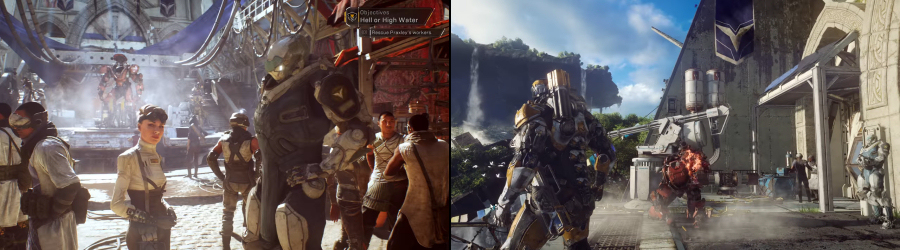

We have been waiting for this for ages. And now, finally, a video game that lets us to put on a rocket-powered suit of armour in which we can take to the skies, flying freely over fantastic alien landscapes while wreaking havoc on our enemies, is in the making.
Anthem, being developed by BioWare, sees a player taking on the role of a freelancer who gets to wear fully customisable exosuits called Javelins, which are not that different from the legendary powered exoskeleton worn by Tony Stark in the Iron Man franchise.
In this shared-world action role-playing video game, that some call BioWare’s answer to Bungie’s Destiny, up to four players can band together to take on roles of freelancers – the bold few who don't lack the courage to leave civilization behind, explore landscapes of primeval beauty and confront the countless dangers they encounter on their journeys to alien worlds.
The small team of up to four freelancers support each other on dangerous expeditions into unknown worlds and unexplored territories and share not only common adventures, but also subsequent rewards for the achieved victories that benefit equally all the members of the team.
The game features a wide arsenal of Javelin exosuits, that are available to the players, each equipped with a set of unique features, such as shields, weapons and special abilities. Players can customise individual Javelins with the gear they earn and craft, then use them to run, leap, climb, fly and swim through a contiguous open world landscapes. During their outings, the freelancers will delve into forgotten ruins of ancient alien dwellings as they seek to defeat the forces plotting to conquer humanity, fight ruthless marauders and savage otherworldly beasts, plunge into extensive flooded cave systems, even experience truly colossal, world-altering natural events such as Shaper Storms, while their power grows with every step into the unknown alien world they take. Whether it is their insatiable ambition, lust for glory, desire for revenge, or promise of fortune that drives them onwards, freelancers’ choices will irrevocably change both them and the world they occupy.

Anthem, which will be published by Electronic Arts, is slated for the last quarter of 2018 release on Microsoft Windows platform, as well as PlayStation 4 and Xbox One video game consoles. We can barely wait!